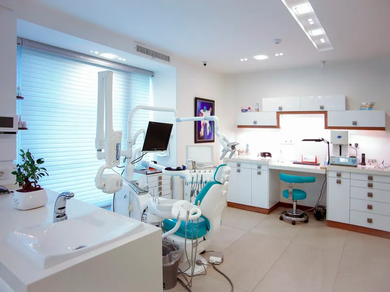
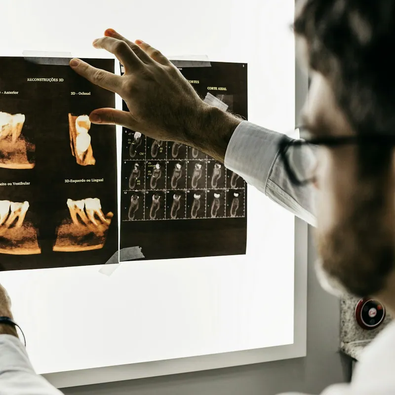
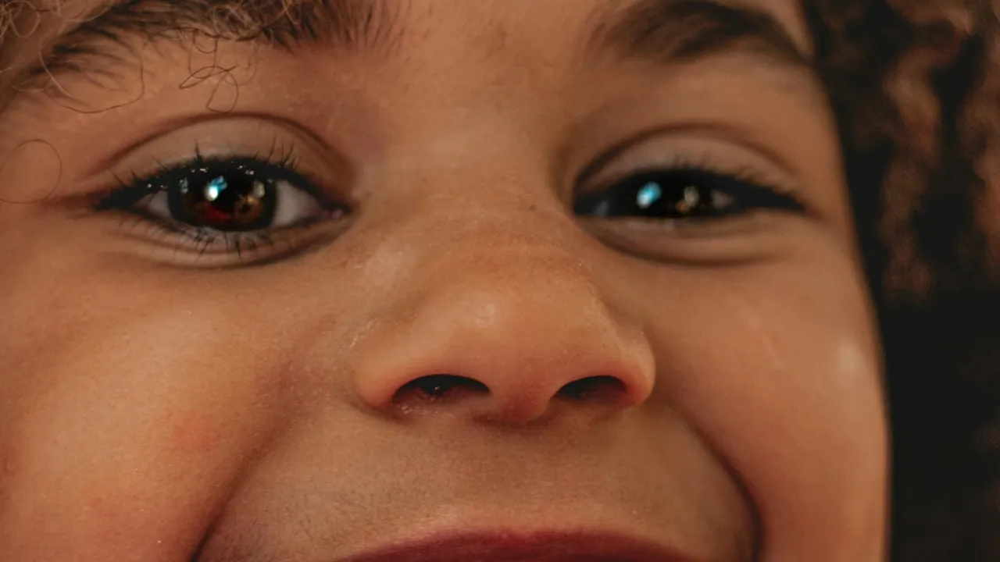

Dental care in Guimarães
Your smile, cared for in detail.
On the Alameda S. Dâmaso, we bring together a multidisciplinary team, our own prosthetics laboratory and advanced diagnostic imaging — so you get precise answers without the waiting.

- ~20 yearsof experience in implant dentistry
- On-site labprosthetics made in the practice
- Top 5% SMEScoring 2025 distinction



What drives us
A legacy of excellence in the heart of Guimarães
To equip the whole practice with the best technical and human resources, so that we can offer our patients the best solutions across every area of dentistry.
Based on the landmark Alameda S. Dâmaso, we have an in-house prosthetics laboratory — which means faster, more reliable oral rehabilitation, whether with fixed or removable prosthetics.
- In-house laboratoryFixed and removable prosthetics with short turnarounds and quality control at every stage.
- Advanced diagnosticsPanoramic X-ray, cephalometric imaging and CT scanning on site, for precise planning.
- Care that follows throughA multidisciplinary team focused on your comfort at every appointment.
What we do
Treatments
Every area of dentistry in one place, with the same team looking after you throughout.
-
Dental implants
Fixed teeth on implants.
Find out more -
Orthodontics
Fixed braces to straighten your smile.
Find out more -
Clear aligners
Discreet, removable correction.
Find out more -
Children’s dentistry
Dental care built around children.
Find out more -
Veneers
Natural-looking ceramic aesthetics.
-
Crowns and bridges
Restoring damaged teeth.
-
Dentures and prosthetics
Fixed or removable, made in our own lab.
-
Teeth whitening
Safe, supervised whitening.
-
Cosmetic dentistry
Discreet, long-lasting restorations.
-
Root canal treatment
Treating the root canals.
-
Periodontics
Health of the gums and supporting bone.
-
Oral surgery
Extractions and minor surgery.
-
Hygiene and scaling
Scaling, polishing and prevention.
-
Panoramic X-ray
Panoramic imaging on site.
-
CT and cephalometric imaging
3D imaging for precise planning.
Our flagship treatment
Dental implants with fixed teeth in a single day
We have been placing fixed teeth on implants for around 20 years. Digital planning, based on a CT scan, lets us map out every step of the surgery in advance — more predictable, less time in the chair, and a result that matches your natural expression.
- 0
- years of implant experience
- 0
- implants placed
- 0
- to leave with fixed teeth


Children’s dentistry
With children, we work at their pace
A child’s first trip to the dentist shapes how they feel about dental care for the rest of their life. So we never rush: we explain each step in words they understand, let them handle the mirror and the suction, and only move on once they are comfortable.
See children’s appointments- A first visit with no treatment Just to get to know the practice, the chair and the team.
- No surprises We explain each step in words the child understands.
- Parents always stay In the room from the start of the appointment to the end.
- Prevention first Sealants, fluoride and guided brushing, with parents watching.
Who will see you
The team looking after you
Dentists and dental nurses who follow every treatment from start to finish — the same faces, appointment after appointment.
Clinical team4 dentists
Support team3 dental nurses
Before you come in
Frequently asked questions
If something is still unclear, do give us a ring — we are happy to talk it through.
Do I need an appointment, or can I walk in?
Appointments are always booked in advance, by phone or email. If you are in acute pain, call us: we do our best to fit emergencies in the same day.
Where can I park?
You get one hour of free parking at the S. Francisco shopping centre, about 200 metres away — a two-minute walk from the practice.
Do you take X-rays on site?
Yes. We have panoramic, cephalometric and CT imaging in the practice itself, which saves you a separate trip and lets us decide on treatment during the same visit.
How long do prosthetics take?
Because the prosthetics laboratory is ours and sits inside the practice, turnarounds are considerably shorter than usual and any adjustment is made on the spot, without waiting on a third party.
Can I really leave with fixed teeth the same day?
In many cases, yes — it is a technique we have practised for around 20 years. It depends on the volume and quality of bone, which we assess by CT scan at a diagnostic appointment before any decision is made.
From what age should I bring my child?
At around one year old, or as soon as the first teeth come through. The first visit is mainly so the child gets to know the place and so we can guide parents on brushing.
We are here to help
Contact and location
4810-286 Guimarães
Calls charged at standard Portuguese landline and mobile rates.
1 hour of free parking
At the S. Francisco shopping centre, about 200 m away — a 2-minute walk from the practice.
Alameda S. Dâmaso 23, Guimarães
The map is provided by Google Maps. By loading it, you accept that Google may collect data and place cookies on your device.
Open directions in a new window